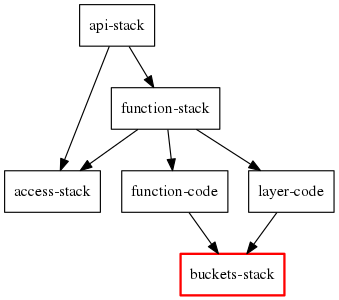

class: center, middle # Better way to deploy to AWS # <strike>Try microservices architecture</strike> # <strike>Try AWS App Mesh</strike> # <strike>Try event-driven architecture</strike> --- # Simple but common use case A simple REST API backed by Lambda function:  --- # Common deployment Use a deployment tool that: -- - is easy to configure: ```yaml namespace: ${namespace} stacks: - name: api template_path: templates/api.yaml ``` -- - has a command to deploy everything: ```bash $ stacker build env.yaml config.yaml ``` -- - and another command to undeploy all: ```bash $ stacker destroy env.yaml config.yaml ``` --- # It's never that simple  We need to upload the code in between -- The order of work should be: 1. Deploy only `CodeBucket` 2. Zip the code and upload to `CodeBucket` 3. Deploy the rest -- Some changes are required... --- # Config changes Split template into 2: ```yaml namespace: ${namespace} stacks: - name: api template_path: templates/api.yaml variables: CodeBucket: ${output code-bucket::Bucket} CodeKey: ${output code-bucket::Key} - name: code-bucket template_path: templates/code-bucket.yaml ``` So that `CodeBucket` can be deployed first --- # Deployment script changes ```bash # Deploy code bucket first stacker build env.yaml config.yaml -t code-bucket ``` -- ```bash # Zip function code and upload to the bucket cd code zip ../code.zip * cd .. code_bucket="$(./get-code-bucket)" # Cannot use same filename if you want CloudFormation to update the function code_zip="$(sha256sum code.zip).zip" code_s3_path="s3://$code_bucket/$code_zip" aws s3 cp code.zip "$code_s3_path" ``` -- ```bash # Update config and deploy the rest ./update-env-code-zip env.yaml "$code_s3_path" stacker build env.yaml config.yaml -t api ``` --- # The main problems -- Messy scripts and configuration hacks as project grows -- Cannot deploy only updated parts during development --- # A better way to deploy -- Start with code before config Everything else will fall into place Code can easily be reused --- # Let's start ```bash # Clone the repo and create virtual env $ git clone git@github.com:bachew/distmono.git $ cd distmono $ bin/dmn --help # first run creates virtual env, takes < 20s ``` -- ```bash # Configure AWS credentials $ cat > env.sh export AWS_ACCESS_KEY_ID="xxxxxxxxxxxxxxxxxxxx" export AWS_SECRET_ACCESS_KEY="xxxxxxxxxxxxxxxxxxxxxxxxxxxxxxxxxxxxxxxx" ``` -- ```bash # Clone config and customize $ cd project-env $ cp api.py api-demo.py $ edit api-demo.py $ cd .. ``` -- ```bash # Deploy, takes < 3 minutes $ bin/dmn -p project-env/api-demo.py build ``` --- # Configuration `project-env/api-demo.py` -- ```python def get_project(): return ApiProject(env=get_env()) ``` A project decides what and how to build -- ```python def get_env(): return { 'namespace': 'ew1-distmono-demo', # prefix for all stack names 'region': 'eu-west-1', } ``` Environment is a project's configuration --- # Project ```python class ApiProject(Project): def get_deployables(self): return { 'api-stack': ApiStack, 'function-stack': FunctionStack, 'function-code': FunctionCode, 'layer-code': LayerCode, 'buckets-stack': BucketsStack, 'access-stack': AccessStack, } def get_dependencies(self): return { 'api-stack': ['function-stack', 'access-stack'], 'function-stack': ['function-code', 'layer-code', 'access-stack'], 'function-code': 'buckets-stack', 'layer-code': 'buckets-stack', 'buckets-stack': 'access-stack', } def get_default_build_target(self): return 'api-stack' ``` --- # Dependencies <table><tr> <td></td> <td style="vertical-align:top"> <p>Build default target is <code>api-stack</code></p> </td> </tr></table> --- # Dependencies <table><tr> <td></td> <td style="vertical-align:top"> <p>Dependencies must be deployed first</p> <ol> <li><code>CodeBucket</code> in <code>buckets-stack</code></li> </ol> </td> </tr></table> --- # Dependencies <table><tr> <td></td> <td style="vertical-align:top"> <p> </p> <ol> <li><code>CodeBucket</code> in <code>buckets-stack</code></li> <li><code>AppRole</code> and policies in <code>access-stack</code></li> </ol> </td> </tr></table> --- # Dependencies <table><tr> <td></td> <td style="vertical-align:top"> <p> </p> <ol> <li><code>CodeBucket</code> in <code>buckets-stack</code></li> <li><code>AppRole</code> and policies in <code>access-stack</code></li> <li>Zip function code and upload to <code>CodeBucket</code></li> </ol> </td> </tr></table> --- # Dependencies <table><tr> <td></td> <td style="vertical-align:top"> <p> </p> <ol> <li><code>CodeBucket</code> in <code>buckets-stack</code></li> <li><code>AppRole</code> and policies in <code>access-stack</code></li> <li>Zip function code and upload to <code>CodeBucket</code></li> <li>Download <small>(not done)</small> and zip libraries, then upload to <code>CodeBucket</code></li> </ol> </td> </tr></table> --- # Dependencies <table><tr> <td></td> <td style="vertical-align:top"> <p> </p> <ol> <li><code>CodeBucket</code> in <code>buckets-stack</code></li> <li><code>AppRole</code> and policies in <code>access-stack</code></li> <li>Zip function code and upload to <code>CodeBucket</code></li> <li>Download <small>(not done)</small> and zip libraries, then upload to <code>CodeBucket</code></li> <li>Deploy Lambda function in <code>function-stack</code> with code and libraries from <code>CodeBucket</code></li> </ol> </td> </tr></table> --- # Dependencies <table><tr> <td></td> <td style="vertical-align:top"> <p>Done</p> <ol> <li><code>CodeBucket</code> in <code>buckets-stack</code></li> <li><code>AppRole</code> and policies in <code>access-stack</code></li> <li>Zip function code and upload to <code>CodeBucket</code></li> <li>Download <small>(not done)</small> and zip libraries, then upload to <code>CodeBucket</code></li> <li>Deploy Lambda function in <code>function-stack</code> with code and libraries from <code>CodeBucket</code></li> <li>Deploy <code>Api</code> in <code>api-stack</code></li> </ol> </td> </tr></table> --- # Testing as part of the build  ```bash $ bin/dmn -p project-env/api-demo.py build test ``` --- # Clean up Destroy everything: ```bash $ bin/dmn -p project-env/api-demo.py destroy ``` --- # More - Using Troposhere to create stack template is more flexible and more maintainable long term - Duplicate templates can easily be eliminated with methods, no copy paste please - CloudFormation has many traps, they can be dealt with more easily, for example: - [`sample_projects.api:ApiStack.add_deployment()`](https://github.com/bachew/distmono/blob/master/sample_projects/api.py#L160) - [`sample_projects.api:Code.build()`](https://github.com/bachew/distmono/blob/master/sample_projects/api.py#L252) - [`sample_projects.api:Code.destroy()`](https://github.com/bachew/distmono/blob/master/sample_projects/api.py#L308) - Environment can be strictly validated to make it hard to misconfigure - See [`distmono.core:Project.load_env()`](https://github.com/bachew/distmono/blob/master/distmono/core.py#L31) - Can override `load_env()` and extend `EnvSchema` - Builds are cached, see `tmp/namespace/NAMESPACE/*` - Except [`sample_projects.api:Code`](https://github.com/bachew/distmono/blob/master/sample_projects/api.py#L247), it's incomplete --- # The end Everything in [github.com/bachew/distmono](https://github.com/bachew/distmono) Slides made with [github.com/gnab/remark](https://github.com/gnab/remark)